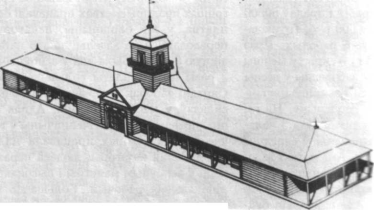

Дрогичинское графство
Путь к реформам в Речи Посполитой заставлял пересмотреть традиционный административный строй. В результате на землях отдельных местечек и городков, которые приобрели успешную динамику развития, образовались графства. Так, в 1778 году было основано Дрогичинское графство. Его административным центром стало бывшее местечко Дрогичин, которое с 1778 года приобрело статус города Речи Посполитой. Положение Дрогичина, как города, владевшего некоторыми вольностями и ратушей, было своеобразным ввиду того, что город был подчинен графской власти. Хотя известно, что старые белорусские города, получившие магдебургское право (право вольного города), имевшие собственные суды, ратушу, самоуправление, хозяйственную и рыночную свободу не зависели от феодальной знати. В Дрогичине еще в начале XVIII века была построена ратуша на рыночной площади (сегодня на этом месте находится новое здание Фонда социальной защиты). Но, ни в одном документе не найдено сведений о могдебургии в Дрогичине.Между тем, торговые вольности и привилегии дрогичинцы удерживали долгое время. Скорее всего, за честь называться городом Дрогичину пришлось заплатить немалую цену – пожертвовать многими из прежних прав. С возникновением графства ратуша была закрыта из-за ветхости, а центром управления графства становился фольварок Островски-Ровины, что был недалеко от города.

Дрогичинская ратуша. Реконструкция.
Формально местные помещики должны были исполнять волю дрогичинского графа Михаила Островского. На самом же деле между помещиками действовали старые права «шляхетских вольностей». Граф Островский стремился подчинить торгово-ремесленную общину города, что препятствовало быстрому развитию Дрогичина и даже привело к упадку торговли. Евреи Дрогичина одного только арендного налога платили 4200 злотых, что в расчете на каждую семью составляло больше чем по 100 злотых. В то время это были большие деньги.В инвентаре 1778 года подробно перечислены доходы с земель Дрогичинского графства. Основу хозяйства составляло выращивание зерновых и животноводство. Среди культур не встречаются упоминания о картофеле. Сохранялось на дрогичинской земле и известное спокон веку бортничество – в то время в графстве насчитывалось 297 колод пасеки. Почти все жители графства должны были участвовать в грибном сборе, от которого были освобождены только жители города и деревня Новики.В исторических документах подробно выделены границы графства: на севере и востоке – от Бездежа, Вавулич, Скибич и до Заплесья и Винча на юго-востоке; на юге от Вульки Радовецкой через болото границы графства протянулись до деревни Перковичи, от которых границы шли до Тороканей, а там заворачивали к Лосинцам и Гошеву, и с запада опять возвращались к Бездежу. Территория графства, таким образом, занимала значительную часть современного Дрогичинского района и была постоянной административно-территориальной единицей в составе Пинского староства. Граница Дрогичинского графства в то время была обозначена курганами.Центр графства – город Дрогичин – по-прежнему, как и в начале XVIII, представлял собой населенный пункт с тремя главными улицами – Перковичской, Хомской и Пинской, на которых расположились 38 домов и 60 хозяйственных построек. Главное место в плане города, как и раньше, занимала торговая площадь, которую большая деревянная ратуша делила на две половины. Так что попасть из одной части площади на другую можно было только через обитые железом ворота ратушной брамы. Над проездом брамы возвышалась деревянная вежа, над крышей которой был острый шпиль с гербом. Со всех четырех сторон ратуша была опоясана галереей на деревянных столбах. Рядом с ратушей на Перковичской улице стоял старый казенный трактир с двумя помещениями, которые смотрели на свет маленькими круглыми окошками. Рядом с торговой площадью, стояла деревянная корчма (бровар). Вообще в Дрогичине в 1778 году было четыре трактира и 12 броваров. Еще один трактир был построен около францисканского монастыря в конце Пинской улицы.Недалеко от площади в направлении Перковичей стояла хата кожевинека, крытая гонтом, и две кожевни: старая и новая, где обрабатывали свиные шкуры. Рядом размещались небольшие еврейские дома с крамами. Это были одно или двухкомнатные строения с деревянным полом, маленькими полукруглыми окнами, с печами для выпечки хлеба, иногда с кафельными грубками белого, жёлтого или зелёного цвета. Фрагменты кафли 18 века встречаются и в наше время при земляных работах в старой части города.Крестьянские хатки были низкими без полов, накрытыми соломой. Некоторые деревянные дома были пристроенные к кирпичной торцевой стене и притянуты железными скобами. Эта традиция строительства в Дрогичине сохранялась очень долго и прослеживается в строениях первой половины 20 века.В конце Перковичской улицы, возле выгона, в конце 18 века стояла воскобойня. Воск, свечи были выгодной продукцией, в крае который славился бортничеством.На Хомской улице (современная улица «Восьмое марта») рядом с Причистенской церковью располагалось несколько крестьянских хат и еврейских постоялых дворов. Здесь же находились крамы, казённые бровары, кирпичная кузница (сохранилась да наших дней). На восточной стороне Хомской улицы выделялись дома ксендза-дьякона Дрогичинского костёла.Значительно меньше сведений осталось о Пинской улице, которая тянулась от Хомской на восток за мост через так называемый «песок» - место в восточной части города к Францисканскому монастырю. И в самом городе, и в его окрестностях до сих пор не было не одной выложенной камнями улицы, и только часть их была насыпана песком. Поэтому добраться на дрогичинские ярмарки было довольно сложно.